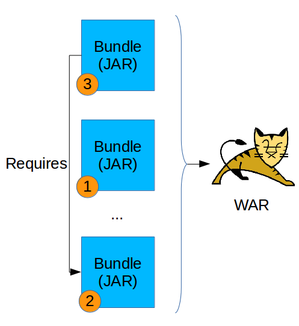
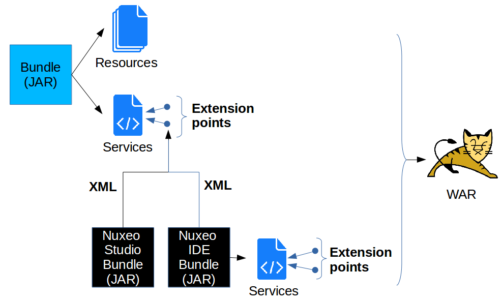

nuxeo
/
Trainings
###Technical Overview
####Extension Points, Contributions
####Advanced Content Repository
####APIs, Connectors and Integration
###Bundles
- 1 bundle = 1 Nuxeo plugin/addon = 1 JAR
- Located in nxserver/bundles or nxserver/plugins
- Configuration/Extension/Customization Mechanism: Extension Point/Contribution
- Loaded by Nuxeo Runtime
- More than 220 bundles in Nuxeo CAP
###Bundle deployment
#### Native Functionalities

###Configuring and Extending Functionalities
#### Extension Points
- Functionalities are built into "services"
- Services expose extension points to make them configurable through XML
- Allow to separate configuration from code => Makes upgrading easy
- A bundle with XML configuration can be generated easily with Nuxeo Studio
#### Creating New Functionalities
- New functionalities are added through bundles containing code / services
- Nuxeo IDE helps in generating them
###Extension Points
#### Configuring / Extending the Nuxeo Platform

##About Nuxeo Core: Advanced Content Repository
###Nuxeo Document
####Not a simple « file ».
####An instance of a Document type (File, Note, Folder, Invoice, Contract…) having
- a unique name, eg: File, Note or Book
- a set of schemas to define its storage structure
- a document can have many schemas, schemas can be applied to many document types
- a set of facets which defines the document behavior or capabilities
- a parent type: the document type will inherit its schemas and facets
- a lifecycle (ie: draft -> validated -> archived)
###Nuxeo Document

### Repository backend
####Nuxeo Visible Content Store
- Dedicated native SQL storage
- Provides clean SQL mapping (ie: usable by a DBA or a BI tool)
- Multiple database vendor support (PostgreSQL, Oracle, MySQL, MSSQL, H2, Derby)
####Efficient storage
- Storage adapters
- Meta-data and structure: SQL DB
- Binaries: Filesystem, SQLDB, S3 ...
- Snapshotable, automatic deduplication, …
- Support hot backup and GC
##APIs, connectors and integration
###Clients

###Service APIs
####Services can also be exposed via WebServices (with various granularity)

###Next?
- Back to the [training agenda](0.0_Agenda.html#day-1)
- [Installation Basics](1.30_Architecture.html)
←
→
/
#